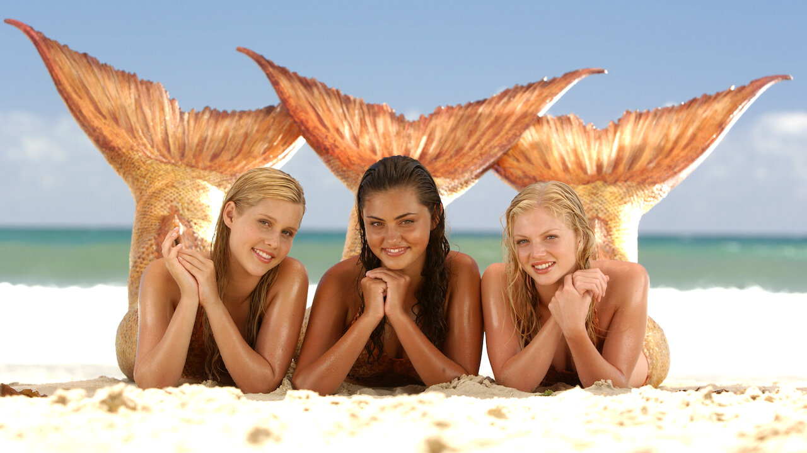

Podstawowe informacje
„H2O – wystarczy kropla” to australijski serial telewizyjny wyprodukowany w 2006r. przy współpracy z Nine Network Australia, ZDF i ZDF Enterprisses. Akcja serialu rozgrywa się w mieście Złote Wybrzeże we wschodniej Australii. Obecnie serial jest jednym z najpopularniejszych seriali dla młodzieży.
Serial „H2O – wystarczy kropla” opowiada o trójce dziewczyn – Emmie, Cleo i Rikki, a później także Charlotte i Belli. Kiedy trzy zwyczajne nastolatki znajdują tajemniczą, pradawną jaskinię, przez nieostrożność poddają się transformacji, która zmienia ich życia na zawsze. Serial opowiada o życiu trzech bardzo różnych od siebie dziewczyn, które stawiają czoła problemom dnia codziennego, w czym nie byłoby nic nadzwyczajnego gdyby nie fakt, że przyjaciółki są syrenami posiadającymi niesamowite moce. Od tej pory stają się syrenami w 10 sekund po każdym kontakcie z wodą. Chcą utrzymać swoją tajemnicę w sekrecie. Pomaga im w tym kilku zaufanych chłopaków.